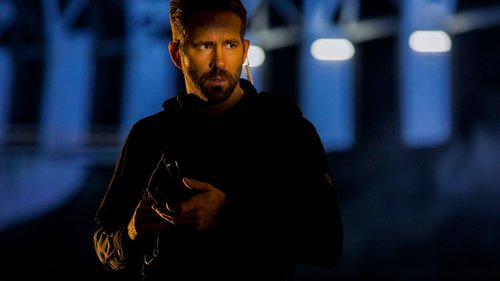

to film na podstawie komiksu Grega Rucki. Opowiada on historiê sekretnej grupy najemników dowodzon¹ przez wojownicz¹ Andy. Nic nie jest w stanie ich zabiæ, a od stuleci walcz¹ o bezpieczeñstwo œwiata ludzi.
to film wyre¿yserwowany przez George’a Clooneya, który zagra³ tak¿e g³ówn¹ rolê – Augustine’a, samotnego naukowca prowadz¹cego badania w Arktyce. Mê¿czyzna próbuje nawi¹zaæ kontakt z astronautami znajduj¹cymi siê na pok³adzie wracaj¹cego na Ziemiê statku kosmicznego i uchroniæ Sully i jej za³ogê przed katastrof¹.

to œwietny film animowany, nie tylko dla najm³odszych widzów. Zdeterminowana i bystra dziewczynka z pasj¹ do nauki buduje rakietê, aby polecieæ na Ksiê¿yc i udowodniæ, ¿e legendarna bogini Ksiê¿yca istnieje naprawdê. Tam bierze udzia³ w nieoczekiwanej wyprawie i odkrywa niesamowit¹ krainê zamieszkan¹ przez fantastyczne stworzenia.
„6 Underground” to jeden z „najwiêkszych” filmów dostêpnych na Netfliksie. Chodzi nie tylko o obsadê, ale równie¿ bud¿et i nazwisko re¿ysera. Dobrze wiemy bowiem, ¿e Michael Bay nie robi zwyczajnych filmów. Historia skupia siê wokó³ szóstki najemników, oficjalnie uznanych za zmar³ych, którzy walcz¹ z przestêpcami. Nie podlegaj¹ oni prawom i miêdzynarodowym konwencjom, bo formalnie s¹ martwi, co daje im wiele wolnoœci.
Inne ciekawe opcje filmów: Odnoœcnik do innych propozycji